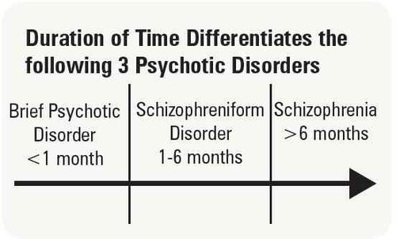

Psychotic disorders are a group of mental illnesses that cause a distorted way of thinking and false perceptions. People with psychotic disorders lose sense of reality. Two main symptoms of psychotic disorders are delusions and hallucinations.
Delusions – believes things that aren’t true, such as believing they've obtained superpowers.
Hallucinations – Perceiving things that aren’t there, such as hearing voices no one else hears.
Psychotic disorders are grouped into a group of disorders called schizophrenia spectrum and other psychotic disorders. This group contains disorders such as schizophrenia , schizophreniform disorder , brief psychotic disorder, schizotypal personality disorder ,and schizoaffective disorder.
Schizophrenia
Schizophrenia affects one’s ability to function properly by interfering with the perception, thoughts, speech, and behavior of a person. One with schizophrenia will often experience hallucinations and delusions, which could seriously disable their normal routine.
Symptoms of schizophrenia include:
Schizophreniform Disorder
Schizophreniform disorder is a pyschotic disorder with symptoms similar to schizophrenia, though lasting only up to six months. If symptoms continue further, then the disorder might be schizophrenia rather then schizophreniform.
Some symptoms are:
Brief Psychotic Disorder
Brief psychotic disorder refers to the sudden appearance of psychotic symptoms that last for a short period of time ( under a month ) before disappearing completely.
Symptoms include:
Schizoaffective Disorder
Schizoaffective disorder is a mental disorder in which one experiences a
combination of psychotic and mood symptoms, such as delusions, hallucinations,
and periods of mania or depression.
There are two types of schizoaffective disorder, bipolar type and depressive type.
Bipolar type includes mainly manic episodes, but also depressive episodes.
Depressive type solely includes episodes of depression.
These symptoms usually start out severe, but become more mild later on.
Signs of schizoaffective disorder include: